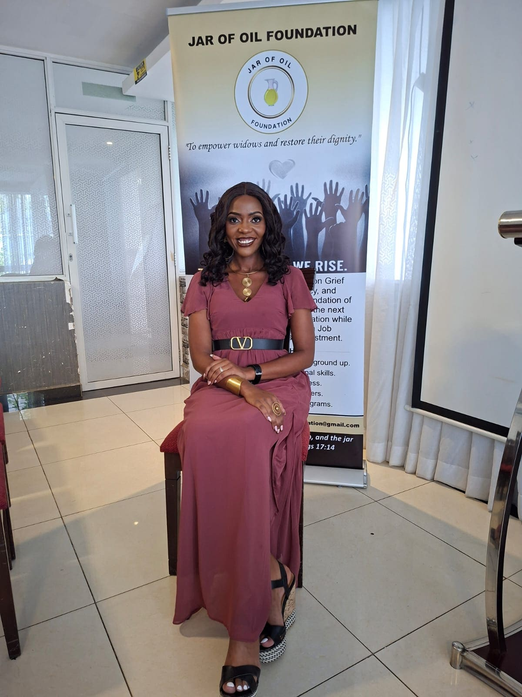

📍 Nairobi, Kenya,Africa
📧 jarofoilfoundation@gmail.com | ☎ +254 719 443 532


📍 Nairobi, Kenya,Africa
📧 jarofoilfoundation@gmail.com | ☎ +254 719 443 532
Jar of Oil Foundation is committed to empowering widows, women, and vulnerable families through compassion, community support, and sustainable empowerment initiatives.
Jar of Oil Foundation is a community-centered organization dedicated to restoring dignity, hope, and opportunity to widows, women, and vulnerable families. Founded by Esther Wangari Gikonyo , the foundation exists to create safe spaces where individuals are empowered emotionally, socially, spiritually, and economically.

The foundation was born from a passion for compassion, resilience, and transformation within communities. Through empowerment programs, mentorship, outreach, and awareness campaigns, Jar of Oil Foundation continues to inspire hope and uplift lives across communities.
To empower widows, women, and vulnerable communities through support programs, mentorship, education, and sustainable opportunities.
A society where every widow and vulnerable family lives with dignity, hope, and access to opportunity.
Women Reached
Community Events
Families Supported
Empowerment Programs
Together, we can restore hope, uplift communities, and empower lives through compassion and action.
Donate Volunteer Partner With Us